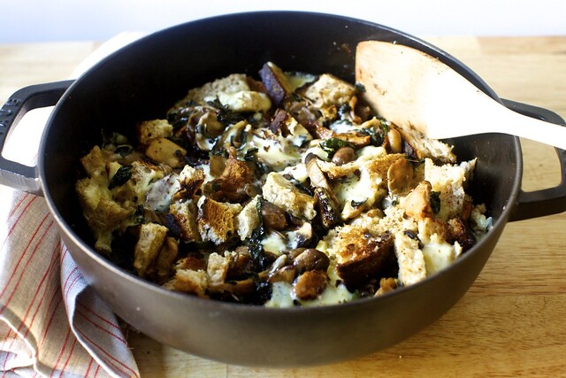

Mushrooms and Greens with Toast

Description
I resisted, for once, but I think this would be lovely with some crispy eggs on top.
But I'd otherwise consider this a one-pan meal. No, a one-pan miracle. For mushrooms,
O'Brady suggests chanterelles, shiitake and oyster mushrooms and I admit I got carried away,
buying a few fancy ones (a trumpet mushroom too!) along with creminis, but you could make
this entirely with small white or brown mushroom and it would still be delicious.
For the greens, kale, chard, spinach or nettles are suggested; I use lancinato kale leaves.
And for a cheese, it really doesn't matter what you use, only that you like it and it likes
to melt. Chèvre, mozzarella, burrata, taleggio and fontina are all “fair game,” she writes.
I went with a soft, melty fontina and it was perfect here.
I used the bread I'm most obsessed with, massive whole wheat sourdough loaves that you can buy
in quarters at Balthazar's bakery on Spring Street or in Englewood, NJ or at any outlet of the
Le Pain Quotidien chain, but of course any bread you enjoy eating will work well here too.
Ingredients
- 3 tablespoons butter, divided
- 1 tablespoon olive oil
- 1 1/2 pounds mixed mushrooms, cleaned, trimmed and torn into bite size pieces
- 2 thick slices bread from a large, crusty loaf
- 2 cloves garlic, minced
- 1 tablespoon white wine vinegar
- 1 fresh red chile, stemmed, seeded and minced
- 6 ounces chopped fresh greens
- 8 ounces of a good melting cheese, thickly sliced
-
Steps
- Melt 2 tablespoons butter and olive oil together in a large, heavy skillet over medium-high heat
- Once fully hot, add mushrooms to pan and cook, stirring regularly, until they've released their
water and start to turn golden brown, about 8 minutes
- Grill your bread
- Once the mushrooms have a nice color on them, add the garlic and cook for 1 minute
- Drizzle with vinegar, most of the chile, salt and pepper and stir to combine
- Add the greens and cook for 5 to 8 minutes, just until collapsed
- Stir in remaining tablespoon butter
- Rip bread into irregular croutons and push them into the sauteed vegetables
- Lay pieces of cheese atop everything, cover, and turn the heat down to medium low
- Let cheese melt for 5 to 10 minutes